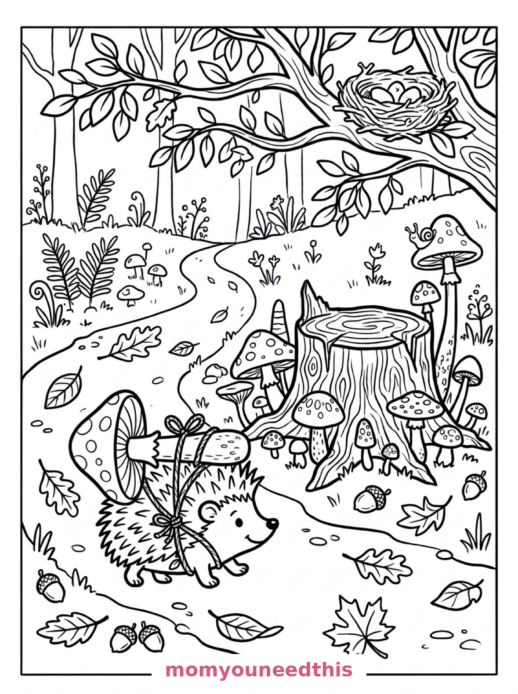
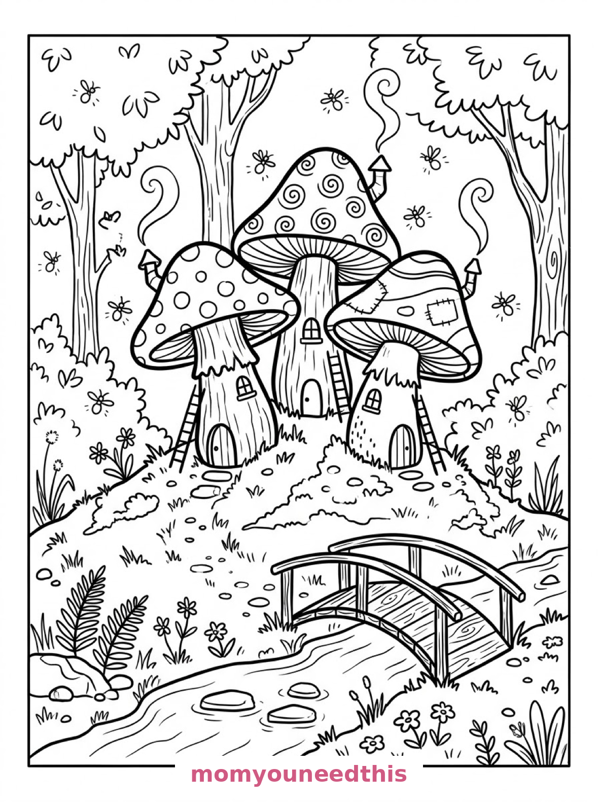

Free Mushroom Coloring Pages Mushroom House, Hedgehog & Village Printables
These free mushroom coloring pages grow a whole storybook forest — a mushroom house with a spotted cap roof, a hedgehog carrying a mushroom home, and three mushroom cottages by a stream. Download the set below, print at home on letter-size paper, and let the coloring fun begin. No signup needed.
Last updated: October 23, 2026
Quick Answer
Yes — this page has three free printable mushroom coloring pages: a storybook mushroom house with a round door and flower boxes, a hedgehog carrying a large mushroom along a forest path, and a cluster of three mushroom cottages with a wooden bridge over a stream. Bold outlines and big spaces, made for little hands. Download, print on letter-size paper, and hand over the crayons — no signup, no cost.
At a Glance
- Ages: 3–8
- Pages: 3 free printables
- Format: Print at home, letter size
- Cost: Free, no signup
- Supplies: Crayons or markers
- Time: 10–20 minutes
🍄 Mushroom House Coloring Page

🎨 Download Your Free Mushroom House Coloring Page
A storybook mushroom house with a tall spotted cap for a roof, a round wooden door and small round windows with flower boxes, a stone path bordered by toadstools, a watering can and a stack of firewood beside it — bold outlines, big spaces, zero signup.
⬇️ Download Free Mushroom House Page 🖨️ Print Mushroom House Page🎁 Free printable for preschoolers & kids
🦔 Hedgehog Carrying a Mushroom Coloring Page

🎨 Download Your Free Hedgehog Mushroom Coloring Page
A hedgehog carries a large mushroom on its prickles along a forest path, past a ring of mushrooms of many sizes growing around an old tree stump, a snail climbing one tall mushroom stem and fallen leaves and acorns scattered across the path — bold outlines, big spaces, zero signup.
⬇️ Download Free Hedgehog Page 🖨️ Print Hedgehog Page🎁 Free printable for preschoolers & kids
🌉 Three Mushroom Cottages Coloring Page

🎨 Download Your Free Mushroom Village Coloring Page
A cluster of three mushroom cottages stands on a mossy forest hill, each with a differently patterned cap, chimneys with curling smoke and tiny ladders against their stems, a wooden bridge crossing a small stream in front and fireflies drifting among the trees — bold outlines, big spaces, zero signup.
⬇️ Download Free Mushroom Village Page 🖨️ Print Mushroom Village Page🎁 Free printable for preschoolers & kids
More Coloring Pages
Tap any picture to open its theme page and download the free printable.


🍄 How To Use This Page
- Browse the three designs and pick the mushroom scene your child will love most.
- Tap download or print under that design — the file opens full-size, ready for letter-size paper.
- Print a couple of copies of the cottages — three caps, three patterns, endless versions.
- Color together with crayons or markers in your best forest quiet voices.
🌲 Why Kids Love Mushroom Coloring Pages
Mushrooms are nature's storybook houses — a cap for a roof, a stem for walls, and spots for decoration. These pages build a whole forest world out of them: one house to live in, one mushroom being carried home by a hedgehog, and a three-cottage village complete with a bridge and fireflies.
The caps are the coloring joy here. Spots, spirals, patches — every cap wears a different pattern, and kids get to decide what each pattern's colors will be. A mushroom cap is a small canvas with a big personality.
🍄 Meet the Three Mushroom Scenes on This Page
The mushroom house. A storybook mushroom house with a tall spotted cap for a roof, a round wooden door, and small round windows with flower boxes, a stone path leading to the door bordered by toadstools, a watering can and a stack of firewood beside the house, ferns and grass tufts around the base, and tall forest trees framing the clearing. It is the classic page in the set — who lives in a house like this?
The hedgehog's delivery. A hedgehog carrying a large mushroom on its prickles along a forest path, a ring of mushrooms of many sizes growing around an old tree stump, a snail climbing one tall mushroom stem, fallen leaves and acorns scattered across the path, and a bird's nest tucked into the branches of a tree overhead. It is the sweetest page in the set — a delivery, a fairy ring and a snail, all on one walk.
The three cottages. A cluster of three mushroom cottages on a mossy forest hill, each with a differently patterned cap, chimneys with curling smoke, and tiny ladders leaning against their stems, a wooden bridge crossing a small stream in front of them, stepping stones in the water, and fireflies drawn as small circles with radiating lines drifting among the trees. It is the fullest page in the set — a whole village at dusk.
✏️ Mushroom Coloring Tips
- Red cap, white spots is the classic. The house's spotted cap begs for it — but a purple cap with yellow spots has its own fans, and both are correct here.
- Give each cottage its own cap pattern. Spots on one, spirals on the next, patches on the third — the page is designed for three different treatments.
- Glow the fireflies. On the village page, color the trees deep and leave the fireflies pale yellow or white — they will look lit.
- Warm the windows. A soft yellow in the round windows makes every mushroom house look lived-in and cozy.
🍄 Coloring Pages for Different Ages
For ages 3 to 4, start with the mushroom house. One giant mushroom, a round door and chunky toadstools are all a little colorer needs.
For ages 5 to 6, the hedgehog page is the sweet spot. The hedgehog and its mushroom are bold shapes, and the ring, the snail and the nest add a gentle story to build.
For ages 7 to 8, hand over the three cottages. The patterned caps, the chimneys, the bridge and the fireflies reward slow, detailed coloring — a finished village worth framing.
🌲 More Mushroom Fun After Coloring
Who lives there? Every mushroom house needs a resident — let your child name the house's owner, the hedgehog's customer, and all three cottage families. Write the names on the back and the pages become a village directory.
For more gentle forest magic, the aesthetic coloring pages keep the same calm mood — and the night shift in this forest belongs to the owl coloring pages.
🔗 More Free Printables You’ll Love
- Free Aesthetic Coloring Pages Calm, pretty scenes: a cottage window, a tea still life, a garden bench.
- Free Owl Coloring Pages A wizard hat, a reading nook and a mother owl to color.
- Free Bunny Coloring Pages Garden, burrow and orchard bunnies to print and color.
- All Free Coloring Pages Browse every free coloring page on the site, organized by theme.
❓ Mushroom Coloring Pages FAQ
Are these mushroom coloring pages really free?
Yes — all three designs on this page are free original printables from MomYouNeedThis. Download them, print them at home, and color — no signup and no cost.
What ages are these coloring pages best for?
Kids ages 3 to 8 get the most from this set. The mushroom house is the gentlest start for younger children, while the hedgehog and village scenes have the detail older kids enjoy.
How do I print a coloring page?
Tap the download button under the design you want, then print the file on regular letter-size paper. The print button opens the full-size page in a new tab if you prefer to print from there.
Is there a mushroom house in this set?
Yes — two, in fact: a single mushroom house with a spotted cap roof and flower boxes, and a village scene with three mushroom cottages, each with a differently patterned cap.
Can I make a mushroom coloring book from these pages?
Yes — print all three designs, stack them in order, and staple along the left edge. Add a cover sheet with your child's name for a finished homemade mushroom coloring book.